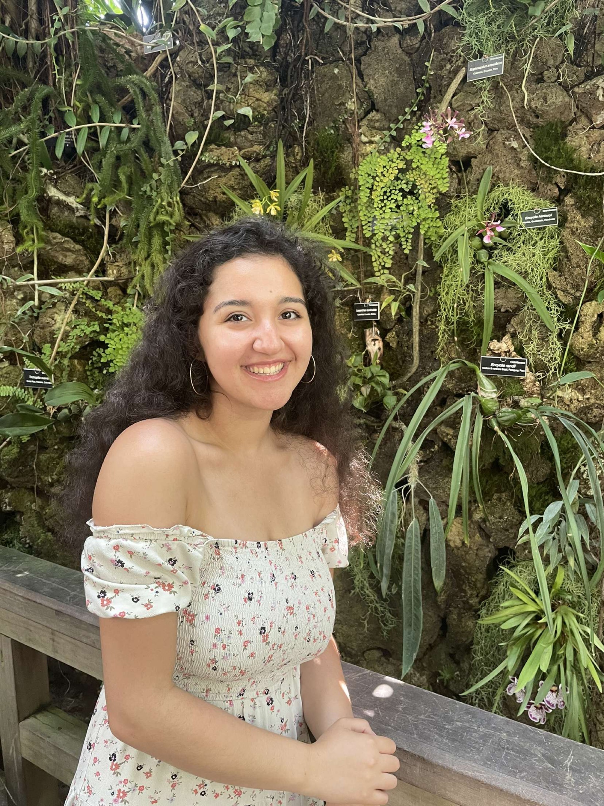

Melody Nouravarsani
Journalism Student

- Mnourava@umd.edu or melodysani21@gmail.com
- LinkedIn: https://www.linkedin.com/in/melody-nouravarsani-3a02a3207
- Twitter: https://x.com/melody_sani?s=21&t=7nTR3AFq6swqkf3DX5So_w
- GitHub: https://github.com/Mnourava
I am a senior journalism student on a pre-law track. I am focusing on multimedia journalism with
a heavy focus on broadcast journalism. I have experience in videography and on-air reporting
from previous institutions, doing both sports and local reporting.
Experience
- Videographer and Graphics Technician
- SeaGull Sports Network
- 2021
I captured video of different sports games for the Salisbury sports network. I worked on a camera
with a tripod. I also worked with graphics from the network to keep score and capture replays. I
ran ads during commercial breaks and organized clips/graphics for the games.
Anchor and Camera Technician
Northwest High School
2018-2020
I did the morning announcements for the school channel. I read off a teleprompter and fixed the
teleprompter too. I also worked the camera to record the anchors.
Education
- Bachelor of Arts, Journalism, minor toward Law and Society, University of Maryland,
2024
- Bachelor of Arts, Political science, Salisbury University, 2024
- Northwest High School, Diploma, 2020
Skills
- Editing. Using mostly Adobe premiere.
- Photography on DSLRs.
- Videography. I worked with both broadcast and non-broadcasting cameras.
- Visual storytelling. I used my videography skills to tell stories about campus and local
events.